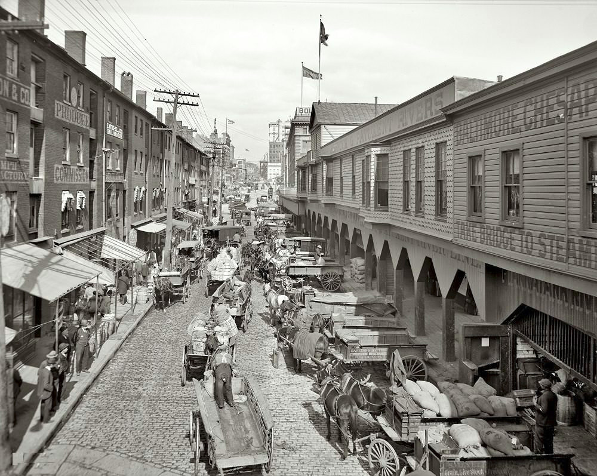
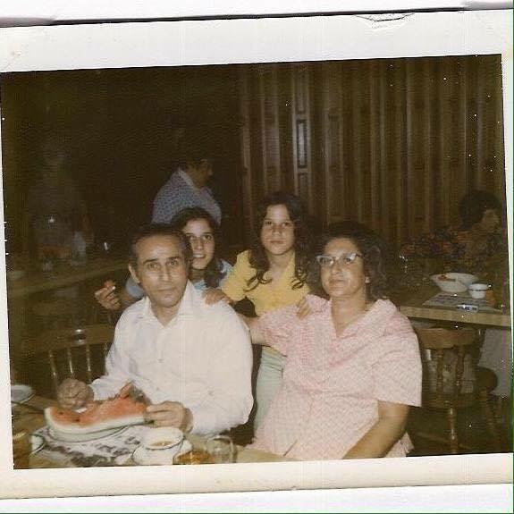

A simple place to begin
Where would you like to start?
Follow Eli’s life in order, or explore the photographs, films, and history surrounding his story.
A documentary in four threads
Every city
has its stories.
Here is one of ours.
From the streets of East Baltimore to the decks of the Merchant Marine and the noise of a crowded boxing hall—discover the life of Eli “Ted” Hanover through the city, the ring, and the family who remembers.
The story behind the headlines
His name appeared on the fight posters. His life was much larger than the ring.
Eli lived through a changing Baltimore: an industrial waterfront, hard-working neighborhoods, the civil rights era, and a city whose boxing halls became places of shared excitement. But the archive is more than a record of events. It is also the story of a husband, father, friend, and neighbor.
The four threads
Four threads. One Baltimore life.
Follow the chapters in order or enter through a single thread. Each reveals another side of the man and the world around him.
The man
Eli “Ted” Hanover
Not just a promoter. A life of grit, work, and belief.
Born in East Baltimore in 1921, Eli grew up during years of hardship and change. He boxed as a young man, went to sea with the Merchant Marine, and eventually returned to Baltimore, where his ambitions for the sport took shape.
His story begins long before the bright lights of a fight night—and continues in the memories of the people who knew him.
Follow Eli’s life story PORTRAIT / ARCHIVAL COLLECTION
PORTRAIT / ARCHIVAL COLLECTIONThe place
Baltimore
The harbor, the neighborhoods, The Block, and streets alive with change.
Eli’s Baltimore was a city of waterfront workers, neighborhood businesses, music, nightlife, and changing civic life. Its communities shaped the audiences, friendships, and opportunities around the boxing ring.
The story of the city is inseparable from the story of the man.
Walk Baltimore’s changing streets
BLOCK
The ring
Boxing History
A dream of making Baltimore a fight town.
From the gyms above The Jewel Box to fight cards at Steelworkers Hall and larger arenas, Eli helped sustain a generation of Baltimore boxing. He worked with fighters, matchmakers, and families whose stories deserve to be told alongside his own.
Beyond wins and losses, this is the history of a community built around the ring.
Discover the boxing archive FIGHTTOWN BALTIMORE
FIGHTTOWN BALTIMORENIGHT
The people
Family
The legacy is not only in the headlines. It is in the people.
Beyond the boxing promotion posters and newspaper stories was a husband and father whose days were filled with family, ordinary routines, laughter, and shared meals. Those memories help complete the picture of who Eli was.
Family photographs, tributes, and recollections preserve the story for generations to come.
Explore the family collection
A FAMILY ARCHIVEMEMORIES • PHOTOGRAPHS • TRIBUTESFrom the historical collection
Moments along the way
A life across the decades.
An introductory timeline; follow the life chapters for context, documents, and fuller dates.
A life remembered
“You don’t just fight for yourself—you fight for your name, your family, and your city.”
A tribute sentiment from the original website; not presented as a verified historical quotation.
Continue the journey
The story is still being told.
Explore the chapters, browse the family collection, and discover more of Baltimore’s boxing past. This archive is a place to remember—and a place to keep learning.